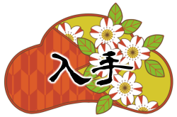
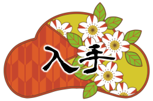

審神者の仕事
審神者となったあなたは本丸と呼ばれる場所で生活していくことになります。最終目的は劣勢の戦局を覆す事ですがそれは簡単な事ではありません。
まずは鍛刀によって戦力を増やし、彼らとコミュニケーションを取り絆を深めながら来たるべき決戦の日に備えましょう。
鍛刀
ゲーム開始時の戦力はサポート役として政府から拝領した加州清光のみです。清光は二人っきりでも喜びそうですが、そういう訳にもいかないので鍛刀によって何振りか新しい仲間を顕現させます。
ただし主人公は力が弱く、三振り程顕現させたところで力尽きるようです。
交流
鍛刀が終わったら、顕現した男士達と交流しましょう。彼らは人間と同じように感情があり、親密になるほど尽くしてくれます。
ただし、主人公は他人との交流が苦手なので交流する度に少しずつストレス値が上がっていきます。
ストレス値が上がりすぎると心に余裕がなくなり、交流しても好感度が上がらなくなったり、イベントが発生しなくなったりします。
ストレス度合は可視化できませんが、審神者部屋のBGMが精神状態によって変化するのでそれを目安に行動を決めましょう。
ストレス値がMAXになると主人公が奇行に走ります。
奇行後は気分がすっきりしてストレス値が下がりますが、正規の攻略法ではありません。
出陣
ただし、主人公は血を見るのが苦手で男士達が重傷になって帰ってくると卒倒しストレス値が上がります。
また、どういう訳か手入れも出来ないので、負傷すると日数経過で自然に治癒するのをを待つ事になります。
負傷状態でも出陣可能かつ刀剣破壊もありませんが、まず勝てないのでそれなりに元気な状態を維持して下さい。
遠征
何をするにもストレスをため込む主人公ですが、遠征の日だけは誰もいない本丸でゆっくりと羽を伸ばすことが出来るようです。男士達を遠征に出すとストレス値が大きく下がります。
また、遠征中は日中の行動回数が1回になり、この時街へ出かける事も出来ます。
街でしか会えない人物もいるので、たまに出かけてみて下さい。